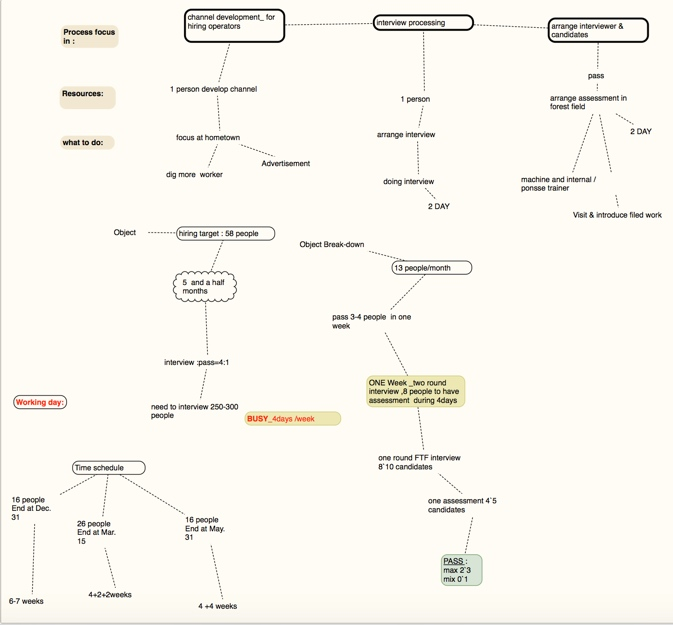

今天翻资料，看到这张图，记录于此，以便回忆。
背景概述
林业种植和采伐机械化运作，在中国走最远的是芬兰的这家公司。
从2014 底开始，除了请来麦肯锡做全公司的改革咨询，机械采伐团队亦为了实现年 150万立方 的采伐量而加快了集中化管理进程。
于是团队的改革先动了，不仅要招聘机械化运作经理和现场管理人员，还有一大批的现场操作人员需要招聘。
当时进口采伐机械专项项目——8个培训班次 ，70多名新机手的招聘（1 批次招聘的目标是 8 人） 。
项目规划分解
项目任务紧，2015 年每个月都要进一批人，配合将到港口的机器，以8-10 人为宜。当时想要增加一些人手，于是我画了下图，后面因为多种原因，最后还是一个人操刀了。
这张图规划了当时想要的人力资源，以及分解了项目前期操作上一些分工和进度计划。

项目具体执行与效果
执行策略
当时的实践——策略的调整
- 首先从招聘流程入手，和采伐部门讨论他们对新机械操作手的招聘需求（特别是机器到港口的时间），评估和确定了每一培训班次的入职时间，确保在该时间节点完成该班次 8 位新人入职；
- 并定制流程节点，加快招聘速度：比如：在新招聘需求的审批，文件提交走的过程中，提前展开招聘方案并大力地实施（广告发布、 甄选、入职安排 ）；
- 当然还有招募的方式和面试的方式的诸多调整（一上午面试10-15人），比如带候选人到林地参观……
省略招聘体验方面的流程
效果
招聘每个月为公司增进了几百万元的产量。
a) 12 年有 2 个招聘经理 + 1 个招聘助理负责该项目，14 年到我接手后， 由我 1 人负责；
b) 招聘周期从2 个月完成 --> 1 个月--> 2 周完成；
c) 产量收入至少每个月增加： 30 天X15 万/天=450 万元 ；
数字估算过程如下
正常作业的情况下，一个机器 24 小时，300 方的作业量，机器空一天的损失是 100 方 x 3 个班次 X 700 元 = 210，000 元；
新机器到来的时候，确保新机手已经完成培训，能马上开始投入工作。
如果空缺1个人那就是 一天 6-7 万元的损失！ 一个招聘批次 8-10 个人，那 1 天就是 60-70 万的业务影响；
针对新人不可能一开始就正常作业，我们把他们的产出减半。当机器到港后，招聘到岗晚一天，一天就有 20-30-40 万的产量损失。
这次策略的调整带来的收益有多少呢？
按产量 至少每个月 30 天 X 15 万=450万元 。
欢迎联系 Arvin Yu , 邮箱：yuyandong@outlook.com
本作品采用 知识共享署名-非商业性使用-禁止演绎 3.0 Unported许可协议 进行许可。